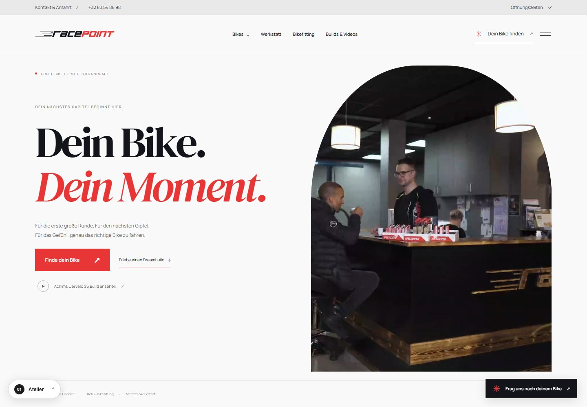

Neu · Scroll-Erlebnis↗
Neu · Scroll-Erlebnis↗05 / MotionDu scrollst.
Du scrollst.
Die Geschichte bewegt sich.
Video-Zoom, wandernde Typografie, 3D-Bike-Aufbau und eine Bike-Auswahl, die beim Scrollen seitlich vorbeizieht.
Ein Racepoint. Sechs Perspektiven.
Gleiche Inhalte, gleiche Funktionen. Fünf neue Entwürfe und die aktuelle Gestaltung im direkten Vergleich. Alle in den Racepoint-Farben Rot, Schwarz und Weiß.
Jeder Entwurf enthält die Startseite und alle 22 Unterseiten. Unten links kannst du auf derselben Seite das Design wechseln.
Neu · Scroll-Erlebnis↗Video-Zoom, wandernde Typografie, 3D-Bike-Aufbau und eine Bike-Auswahl, die beim Scrollen seitlich vorbeizieht.

↗Ein ruhiges Magazin in Wei?, Schwarz und Racepoint-Rot. Große Serifenschrift, viel Luft und bewusst gesetzte Fotografie.
 ↗
↗Motorsport-Ästhetik in Schwarz und Racepoint-Rot. Kantige Formen, technische Details und kompromisslos große Typografie.
 ↗
↗Rot, Schwarz und Weiß. Weiche Formen, große Bilder und eine entspannte Einladung zur nächsten Tour.
 Fullscreen-Video auf jeder Seite↗
Fullscreen-Video auf jeder Seite↗Die aktuelle Gestaltung mit einem großen Hintergrundfilm auf jeder Seite. Stumm, pausierbar und passend zum Thema.
Die Video-Hintergründe laden direkt von YouTube. Kontakt und Bikefitting nutzen den lokalen Shop-Teaser. Aktueller Stand↗
Aktueller Stand↗Die bisherige Gestaltung bleibt erhalten. Neu ist der schnelle Zugang zu Kontakt und Öffnungszeiten im Kopfbereich.